Kuvalamkaattu Ilam
Rooted in Kerala's rural folklore, ancestral family curses, and forgotten occult traditions.
"Behind weathered rosewood doorways and iron-nailed padlocks, generations of forbidden rituals remain unfinished. In Kuvalamkaattu, silence is merely the entity catching its breath."
The story revolves around the protagonist Ajayan who comes back to his hometown to find the documents about his ancestral home Illam (ഇല്ലം) after running away from the place at the age of 5 with his father and mother. but ended up caught in a web of lies and mysteries that left behind by his grandfather and his father before him. the story focuses on thedark ritual practiced and the consequences that follows it and the ones that watches us from the dark
Core Gameplay Systems
Diegetic mechanics, resource scarcity, and sensory tension engineered for maximum immersion.
Diegetic First-Person Immersion
Zero floating UI bars or crosshairs. The player's physical state is communicated entirely through character audio, shallow gasping breaths, visceral trembling of the hands when terror strikes, and blood pulsing against the auditory channels.
Brass Lantern & Sacred Oil Scarcity
Your primary lifeline is a traditional Kerala hand lantern (Kuthuvilakku / Cheena Chatti). Oil is scarce and burns quickly. In absolute darkness, the supernatural forces close in rapidly—yet carrying an open flame exposes your exact position to patrolling entities.
3D Auditory Stealth & Creaking Timber
Every step on century-old teak floorboards triggers dynamic acoustic propagation. Players must learn to crouch and step deliberately. Distant temple bells, whispers through wall cavities, and sudden footsteps above provide vital cues for survival.
Psychological Dread & Spatial Distortion
Extended exposure to the dark triggers sanity loss. Hallucinations alter the mansion's geography: doors vanish, corridors stretch infinitely into the gloom, and whispers offer deceptive guidance designed to lead you straight into the entity's path.
Unreal Engine 5 Technical Stack
Harnessing Lumen, Nanite, and MetaSounds to craft an authentic, photorealistic heritage environment.
Lumen Dynamic Lighting
Real-time multi-bounce global illumination accurately renders the soft, warm glow of flickering oil flames bouncing off dark, polished timber, hand-plastered walls, and copper utensils. Complete absence of baked lighting allows dynamic shadows and pitch-black corners to evoke genuine terror.
Nanite Heritage Assets
Intricately detailed architectural elements—hand-carved teak pillars, brass door latches, ornate ceiling panels, and sacred serpent stone groves (Sarpa Kaavu)—are rendered with millions of micro-polygons directly with zero Level-of-Detail (LOD) pop-in.
MetaSounds Audio Pipeline
A fully procedural sound design framework built in Unreal's MetaSounds. Generates real-time ambient rain drumming on terracotta tiles, dynamic room acoustic reverberations, and spatialized supernatural whispering that adapts directly to player sanity levels.
Chaos Physics & Volumetric Fog
Volumetric mist filters through the central courtyard skylight, illuminated by lightning flashes. Dynamic cloth simulation handles torn vintage window drapes and shrine curtains reacting to door breaches and supernatural gusts of wind.
Production Roadmap
Current development progress at Framework Studio.
Core Mechanics & Locomotion
✓ COMPLETEDFirst-person camera rig, lantern holding physics, oil consumption loops, and diegetic breath simulation verified.
Illam Manor Level Design
● IN PROGRESSNanite architectural modular kit creation, courtyard illumination, realistic Kerala wood/clay PBR textures.
Entity AI & Sanity Loop
⏳ SCHEDULEDBehavior tree entity pathfinding, hearing perception AI, dynamic hallucinations and geometry-shifting events.
Playable Teaser / Demo
⏳ UPCOMINGVertical slice demo release for PC players featuring the mansion ground floor and prologue puzzle sequence.
Follow the Development of Kuvalamkaattu Ilam
Developed by Anand S Kumar (22-year-old Game Developer, 3D Animator & VFX Artist). For publishing inquiries, playtesting access, or collaboration opportunities, feel free to reach out directly.